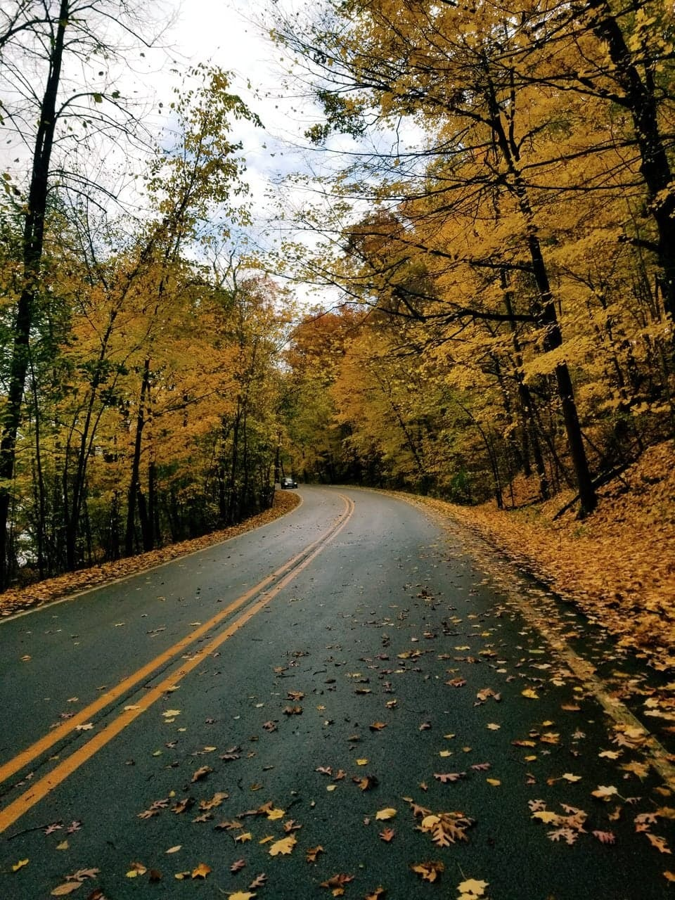
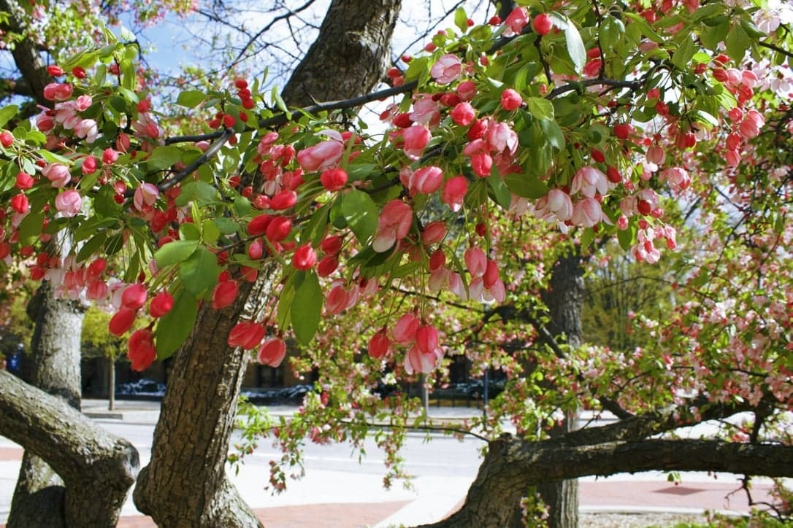
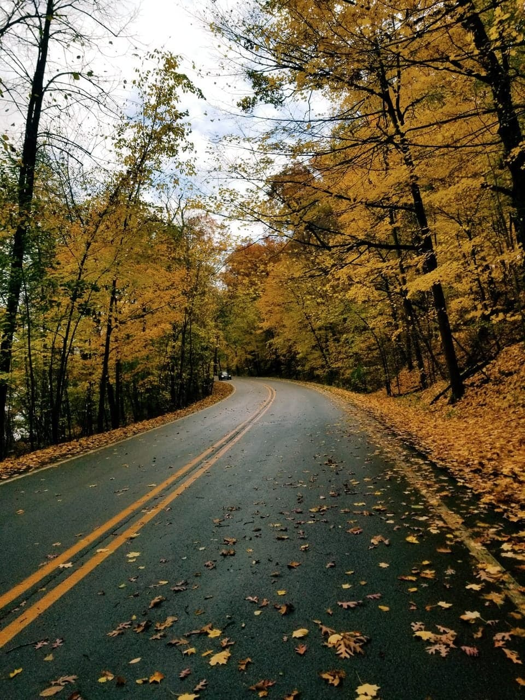
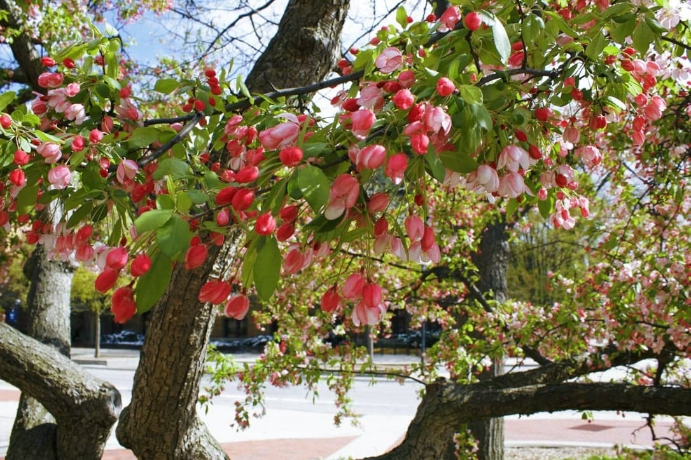
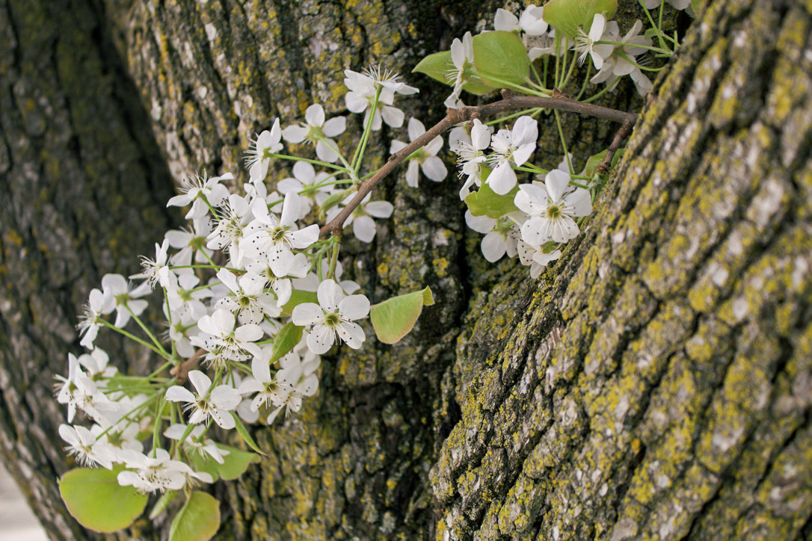
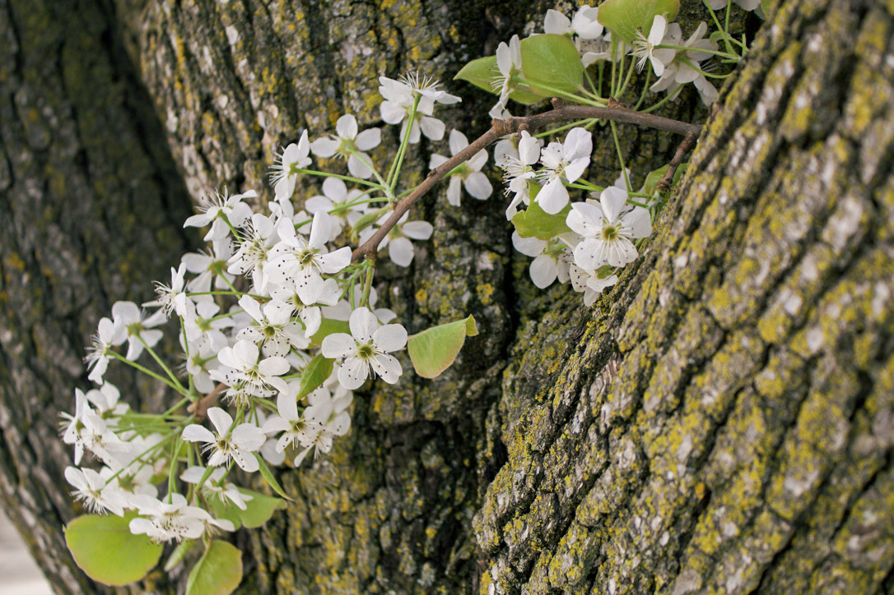

Nature
Why do I take pictures of nature?
The images I have included in this gallery are shots focusing on one subject at a time. There is a lot going on around us every single day that sometimes we forget to focus on one thing at a time. These images are meant to freeze a moment or freeze a subject in time to shine their natural beauty that is often overlooked. Whether it be the beatuiful petals on a flower that tell us what season we are in or the action of someone feeding an animal, there is always something beautiful present. Like Ferris Bueller said in Ferris Bueller's Day Off: "If you don't stop and look around once in a while, you could miss it."
 



 
